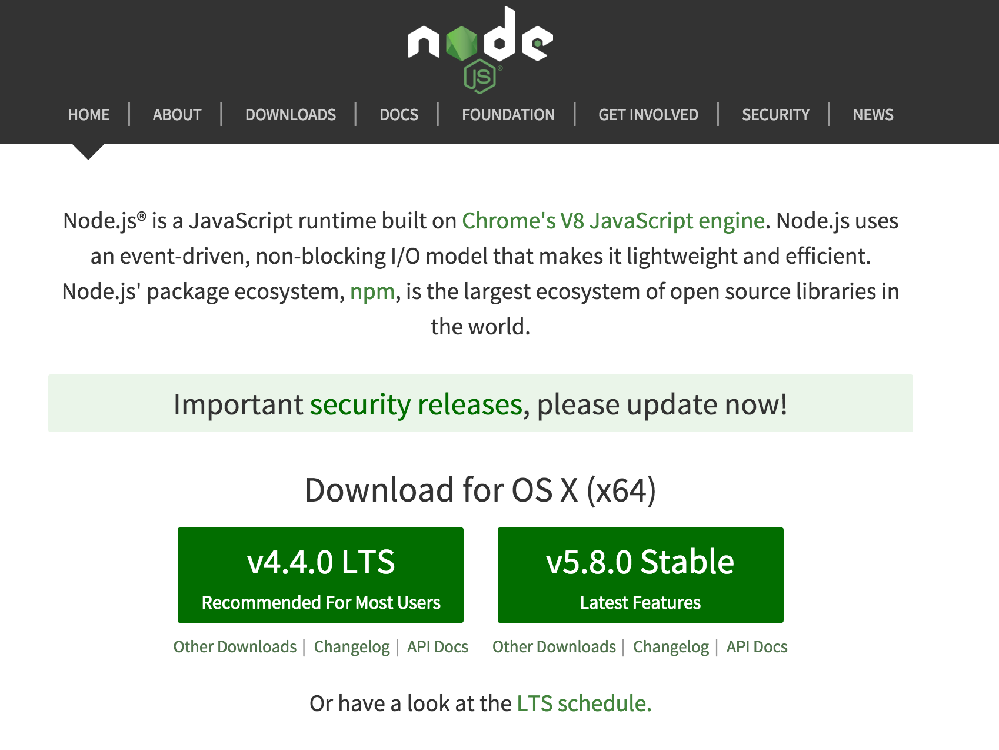
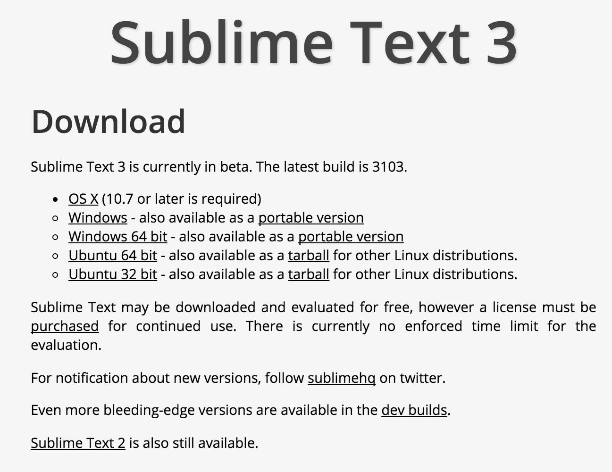
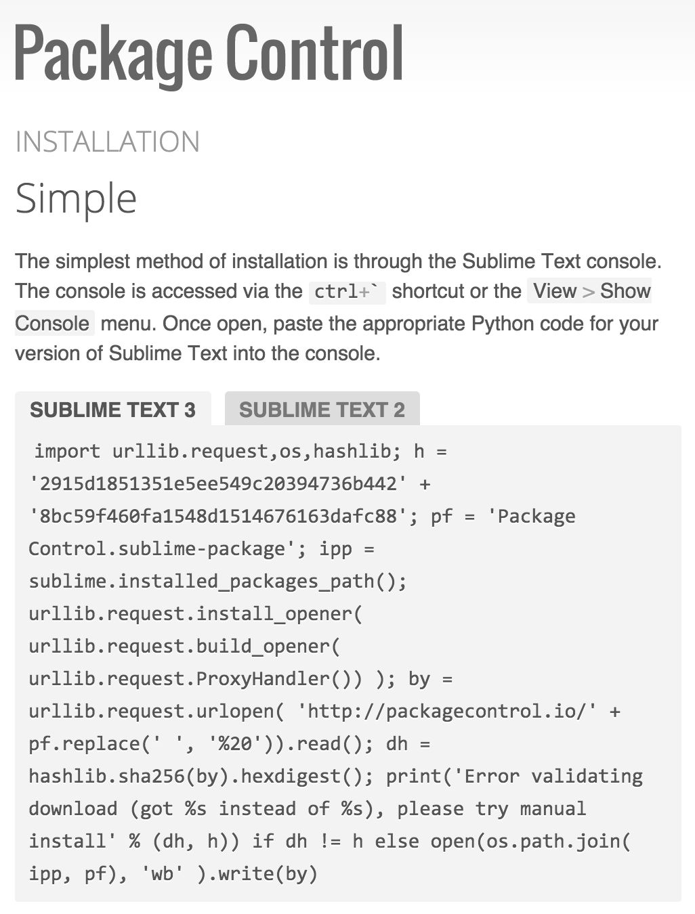
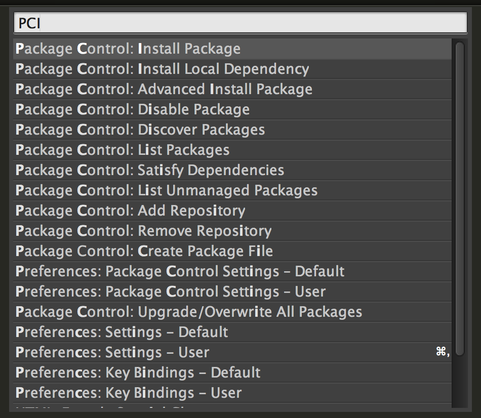
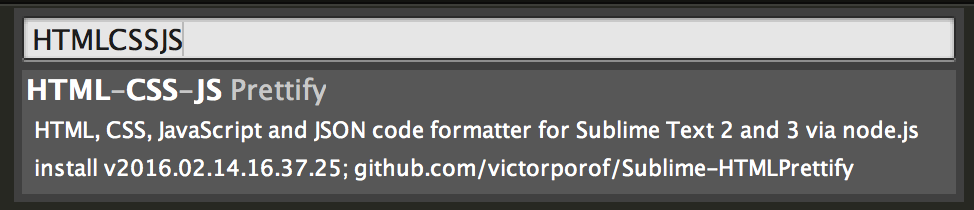
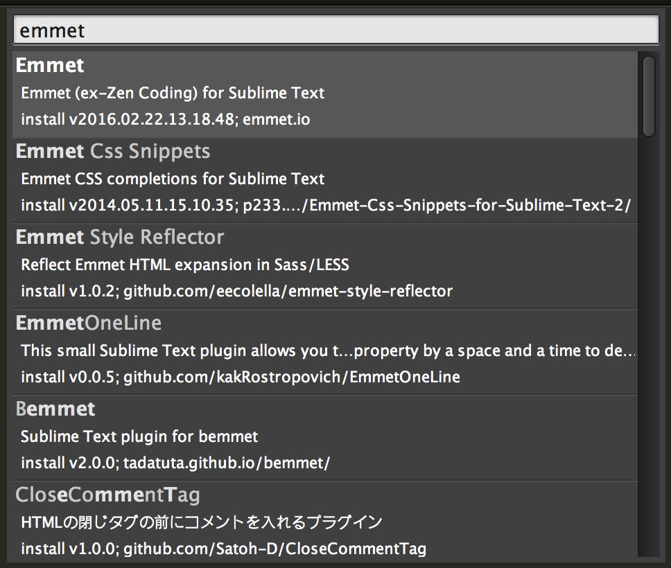
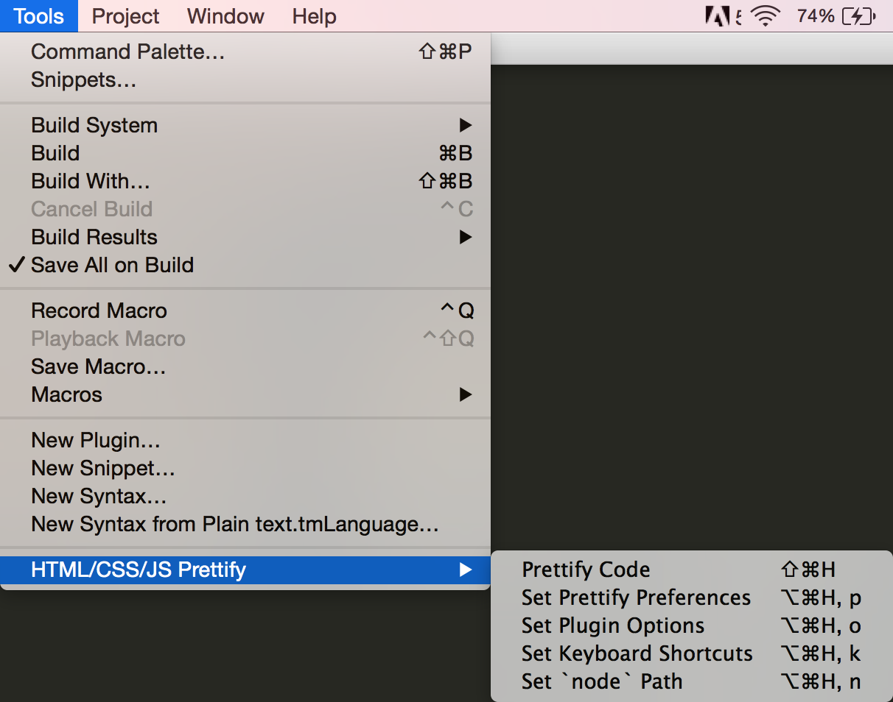
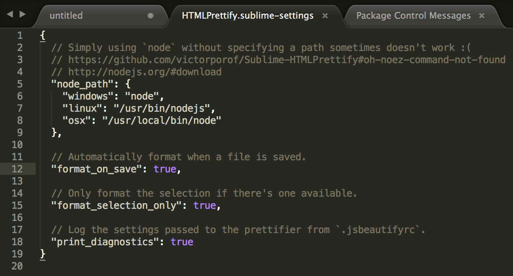

312 sublime 安裝教學
STEP 1 安裝node.js首先至node.js下載安裝
安裝後，至終端機輸入node -v，檢查安裝版本。
 STEP 2 安裝sublime
STEP 2 安裝sublime
至sublime官網下載安裝
 STEP 3 安裝Package Controlsublime安裝完成後至Package Control頁面，開啟 Sublime Text 3 主程式後，直接按下 Ctrl + ` 組合鍵開啟。
直接複製貼上網頁提供的指令到主控台命令列中，並直接按下 Enter 執行，即可動安裝完畢。
STEP 4 Package Control : Install Packagecommand+shift+P
輸入htmlcssjs安裝
command+shift+P
輸入emmet安裝
至Tools>HTML/CSS/JS prettify>Set`node`path
出現下方畫面，手動修改format_on_save: true，完成。
